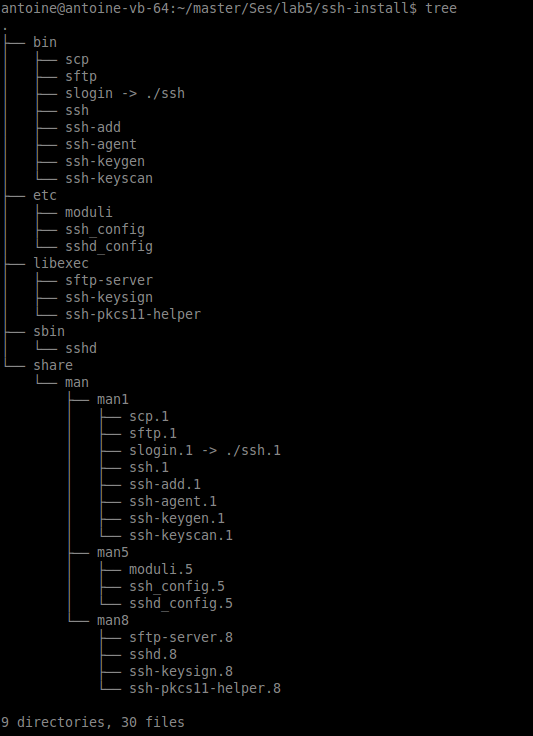

Lab 5: Hardening Linux¶
This lab is about installing the latest version of OpenSSH with the correct options to ensure maximum security. We also check that the source package is issued by the right developer to avoid installing untrusted software.
Question 1 : Check the signature of OpenSSH source package¶
The OpenSSH package can be downloaded from the project website or from a mirror. To download the source package and its signature , we can use the following commands:
$ wget http://mirror.switch.ch/ftp/pub/OpenBSD/OpenSSH/portable/openssh-7.1p1.tar.gz
$ wget http://mirror.switch.ch/ftp/pub/OpenBSD/OpenSSH/portable/openssh-7.1p1.tar.gz.asc
If we look into openssh-7.1p1.tar.gz.asc we see that it is a PGP signature.
Then we can check the downloaded archive:
$ gpg --verify openssh-7.1p1.tar.gz.asc openssh-7.1p1.tar.gz
gpg: Signature made Fre 21 Aug 2015 07:10:03 CEST using RSA key ID 6D920D30
gpg: Can't check signature: public key not found
GPG complains that the public key is missing. GPG can download the key automaticaly from the RSA public key ID:
$ gpg --recv-keys 6D920D30
gpg: requesting key 6D920D30 from hkp server keys.gnupg.net
gpg: key 6D920D30: public key "Damien Miller <djm@mindrot.org>" imported
gpg: no ultimately trusted keys found
gpg: Total number processed: 1
gpg: imported: 1 (RSA: 1)
We can retry the verification:
$ gpg --verify openssh-7.1p1.tar.gz.asc openssh-7.1p1.tar.gz
gpg: Signature made Fre 21 Aug 2015 07:10:03 CEST using RSA key ID 6D920D30
gpg: Good signature from "Damien Miller <djm@mindrot.org>"
gpg: WARNING: This key is not certified with a trusted signature!
gpg: There is no indication that the signature belongs to the owner.
Primary key fingerprint: 59C2 118E D206 D927 E667 EBE3 D3E5 F56B 6D92 0D30
Question 2: Configure the package¶
First we need to extract the source package:
$ tar xzf openssh-7.1p1.tar.gz
$ cd openssh-7.1p1/
We need to make the configure script executable and then we can get the options list:
$ chmod u+x configure
$ ./configure --help
`configure' configures OpenSSH Portable to adapt to many kinds of systems.
Usage: ./configure [OPTION]... [VAR=VALUE]...
To assign environment variables (e.g., CC, CFLAGS...), specify them as
VAR=VALUE. See below for descriptions of some of the useful variables.
Defaults for the options are specified in brackets.
Configuration:
-h, --help display this help and exit
--help=short display options specific to this package
--help=recursive display the short help of all the included packages
-V, --version display version information and exit
-q, --quiet, --silent do not print `checking...' messages
--cache-file=FILE cache test results in FILE [disabled]
-C, --config-cache alias for `--cache-file=config.cache'
-n, --no-create do not create output files
--srcdir=DIR find the sources in DIR [configure dir or `..']
Installation directories:
--prefix=PREFIX install architecture-independent files in PREFIX
[/usr/local]
--exec-prefix=EPREFIX install architecture-dependent files in EPREFIX
[PREFIX]
By default, `make install' will install all the files in
`/usr/local/bin', `/usr/local/lib' etc. You can specify
an installation prefix other than `/usr/local' using `--prefix',
for instance `--prefix=$HOME'.
For better control, use the options below.
Fine tuning of the installation directories:
--bindir=DIR user executables [EPREFIX/bin]
--sbindir=DIR system admin executables [EPREFIX/sbin]
--libexecdir=DIR program executables [EPREFIX/libexec]
--sysconfdir=DIR read-only single-machine data [PREFIX/etc]
--sharedstatedir=DIR modifiable architecture-independent data [PREFIX/com]
--localstatedir=DIR modifiable single-machine data [PREFIX/var]
--libdir=DIR object code libraries [EPREFIX/lib]
--includedir=DIR C header files [PREFIX/include]
--oldincludedir=DIR C header files for non-gcc [/usr/include]
--datarootdir=DIR read-only arch.-independent data root [PREFIX/share]
--datadir=DIR read-only architecture-independent data [DATAROOTDIR]
--infodir=DIR info documentation [DATAROOTDIR/info]
--localedir=DIR locale-dependent data [DATAROOTDIR/locale]
--mandir=DIR man documentation [DATAROOTDIR/man]
--docdir=DIR documentation root [DATAROOTDIR/doc/openssh]
--htmldir=DIR html documentation [DOCDIR]
--dvidir=DIR dvi documentation [DOCDIR]
--pdfdir=DIR pdf documentation [DOCDIR]
--psdir=DIR ps documentation [DOCDIR]
System types:
--build=BUILD configure for building on BUILD [guessed]
--host=HOST cross-compile to build programs to run on HOST [BUILD]
Optional Features:
--disable-FEATURE do not include FEATURE (same as --enable-FEATURE=no)
--enable-FEATURE[=ARG] include FEATURE [ARG=yes]
--disable-largefile omit support for large files
--disable-strip Disable calling strip(1) on install
--disable-etc-default-login Disable using PATH from /etc/default/login no
--disable-lastlog disable use of lastlog even if detected no
--disable-utmp disable use of utmp even if detected no
--disable-utmpx disable use of utmpx even if detected no
--disable-wtmp disable use of wtmp even if detected no
--disable-wtmpx disable use of wtmpx even if detected no
--disable-libutil disable use of libutil (login() etc.) no
--disable-pututline disable use of pututline() etc. (uwtmp) no
--disable-pututxline disable use of pututxline() etc. (uwtmpx) no
Optional Packages:
--with-PACKAGE[=ARG] use PACKAGE [ARG=yes]
--without-PACKAGE do not use PACKAGE (same as --with-PACKAGE=no)
--without-openssl Disable use of OpenSSL; use only limited internal crypto **EXPERIMENTAL**
--without-ssh1 Enable support for SSH protocol 1
--without-stackprotect Don't use compiler's stack protection
--without-hardening Don't use toolchain hardening flags
--without-rpath Disable auto-added -R linker paths
--with-cflags Specify additional flags to pass to compiler
--with-cppflags Specify additional flags to pass to preprocessor
--with-ldflags Specify additional flags to pass to linker
--with-libs Specify additional libraries to link with
--with-Werror Build main code with -Werror
--with-solaris-contracts Enable Solaris process contracts (experimental)
--with-solaris-projects Enable Solaris projects (experimental)
--with-osfsia Enable Digital Unix SIA
--with-zlib=PATH Use zlib in PATH
--without-zlib-version-check Disable zlib version check
--with-skey[=PATH] Enable S/Key support (optionally in PATH)
--with-ldns[=PATH] Use ldns for DNSSEC support (optionally in PATH)
--with-libedit[=PATH] Enable libedit support for sftp
--with-audit=module Enable audit support (modules=debug,bsm,linux)
--with-pie Build Position Independent Executables if possible
--with-ssl-dir=PATH Specify path to OpenSSL installation
--without-openssl-header-check Disable OpenSSL version consistency check
--with-ssl-engine Enable OpenSSL (hardware) ENGINE support
--with-prngd-port=PORT read entropy from PRNGD/EGD TCP localhost:PORT
--with-prngd-socket=FILE read entropy from PRNGD/EGD socket FILE (default=/var/run/egd-pool)
--with-pam Enable PAM support
--with-privsep-user=user Specify non-privileged user for privilege separation
--with-sandbox=style Specify privilege separation sandbox (no, darwin, rlimit, systrace, seccomp_filter, capsicum)
--with-selinux Enable SELinux support
--with-kerberos5=PATH Enable Kerberos 5 support
--with-privsep-path=xxx Path for privilege separation chroot (default=/var/empty)
--with-xauth=PATH Specify path to xauth program
--with-maildir=/path/to/mail Specify your system mail directory
--with-mantype=man|cat|doc Set man page type
--with-md5-passwords Enable use of MD5 passwords
--without-shadow Disable shadow password support
--with-ipaddr-display Use ip address instead of hostname in $DISPLAY
--with-default-path= Specify default $PATH environment for server
--with-superuser-path= Specify different path for super-user
--with-4in6 Check for and convert IPv4 in IPv6 mapped addresses
--with-bsd-auth Enable BSD auth support
--with-pid-dir=PATH Specify location of ssh.pid file
--with-lastlog=FILE|DIR specify lastlog location common locations
Some influential environment variables:
CC C compiler command
CFLAGS C compiler flags
LDFLAGS linker flags, e.g. -L<lib dir> if you have libraries in a
nonstandard directory <lib dir>
LIBS libraries to pass to the linker, e.g. -l<library>
CPPFLAGS C/C++/Objective C preprocessor flags, e.g. -I<include dir> if
you have headers in a nonstandard directory <include dir>
CPP C preprocessor
Use these variables to override the choices made by `configure' or to help
it to find libraries and programs with nonstandard names/locations.
Report bugs to <openssh-unix-dev@mindrot.org>.
So for the lab, we need the following options:
- –without-openssh
- –without-ssh1
- –with-pie
- –prefix=`pwd`/install
We can now configure & build the package:
$ ./configure --without-openssl --without-ssh1 --with-pie --prefix=/home/antoine/master/Ses/lab5/ssh-install
$ make
$ sudo make install
We can see that the following was installed in /home/antoine/master/Ses/lab5/ssh-install`:

We can delete this tree as we don’t need it. We will recompile it, but for the ARM processor.
Question 3: Configure for the odroid¶
We try now to cross-compile for the odroid. We need to specify the gcc compiler to use by specifying the host prefix. Before this, we need to put the cross-compiler on the PATH, so that the configure script is able to find it:
$ export PATH=/home/antoine/workspace/xu3/buildroot/output/host/usr/bin:$PATH
$ ./configure --without-openssl --without-ssh1 --with-pie --prefix=/home/antoine/master/Ses/lab5/ssh-install --host=arm-linux-gnueabihf
$ make
$ make install
The last step (make install) will fail as it don’t use the right strip utility. To correct this, we need to edit the Makefile to tell it to use the right utility, as we need the ARM version of it. So we need to change line 35 in the Makefile
STRIP_OPT=-s --strip-program=arm-linux-gnueabihf-strip
We can then redo the install
$ make install
Despite the error, we have the same tree installed:

We can see that we have an executable for the ARM machine:
antoine@antoine-vb-64:~/master/Ses/lab5/ssh-install$ file sbin/sshd
sbin/sshd: ELF 32-bit LSB shared object, ARM, EABI5 version 1 (SYSV), dynamically linked (uses shared libs), for GNU/Linux 3.1.1, BuildID[sha1]=a220decacaf8a2d54a8c26802898a631964103b4, stripped
Question 4: Install on the Odroid¶
We can copy the installation to the root fs:
$ sudo cp -r * /media/antoine/rootfs/
Question 5: Configure ssh¶
We need to add the following options to /etc/sshd_config
# Force use of IPv4 only
Port 22
ListenAddress 0.0.0.0
# Force use of protocol version 2
Protocol 2
# Disable port forwarding
AllowTcpForwarding no
# Select the allowed cyphers
Ciphers aes256-cbc, aes256-ctr, aes128-cbc, blowfish-cbc, 3des-cbc, hmac-sha256, hmac-sha1
# Enable privilege separation
UsePrivilegeSeparation yes
# Don't allow root to login
PermitRootLogin no
# Give a banner file
Banner /etc/sshd_banner